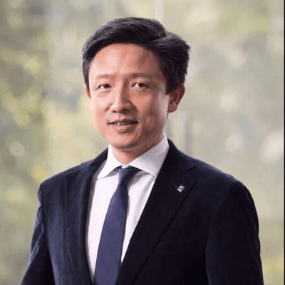
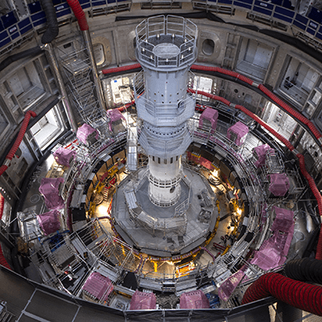
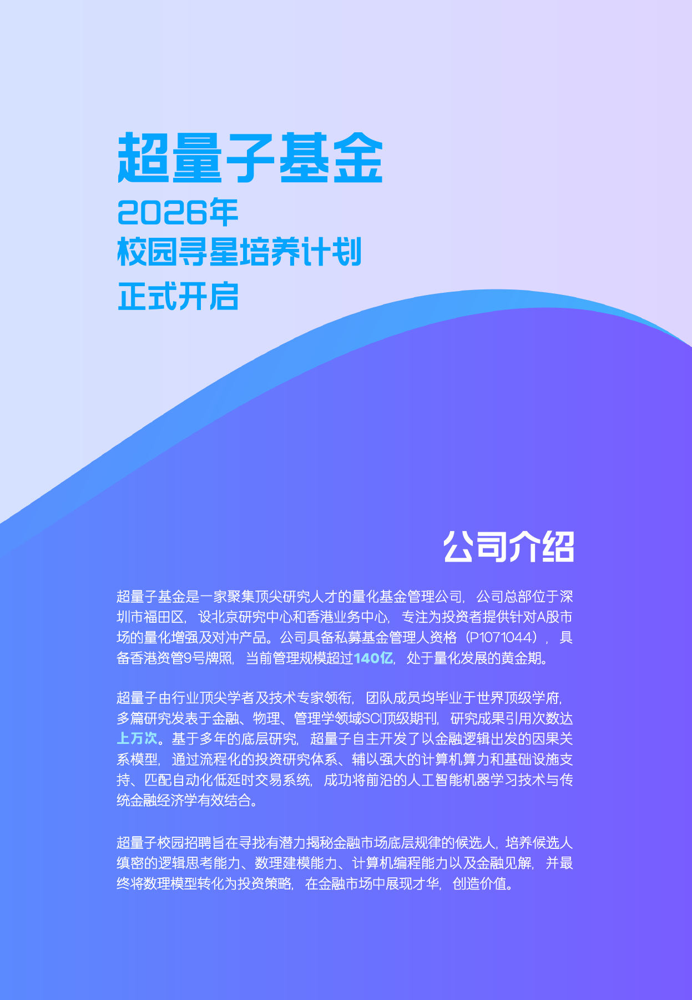

我们用金融逻辑定义问题，以数理科学寻找规律，
再用机器智能与工程系统，将研究转化为长期投资能力。We define problems through financial logic, identify patterns through mathematical science, and transform research into long-term investment capabilities through machine intelligence and engineering systems.
ABOUT SUPER QUANTUM
超量子基金Super Quantum
一家将机器学习与计量经济学应用于量化资产管理的私募证券基金管理机构。A private securities fund manager applying machine learning and econometric methods to quantitative asset management.
团队成员来自麻省理工学院、哥伦比亚大学、清华大学、北京大学、加州大学、香港科技大学、香港中文大学。Team members come from MIT, Columbia University, Tsinghua University, Peking University, the University of California, HKUST and CUHK.
投研团队RESEARCH TEAM
投研团队Research Team
投研团队超过40人，多数具有国内外一流高校硕士及以上学历，其中包括10余位毕业于国内外顶尖高校的博士。团队成员毕业于麻省理工学院、清华大学、北京大学、中国科学技术大学、加州大学、南洋理工大学、香港中文大学、香港科技大学等高校。The research and investment team comprises more than 40 professionals, most of whom hold postgraduate degrees from leading universities in China and overseas. The team includes more than 10 Ph.D. graduates from top institutions.
团队创始人Founder

团队创始人FOUNDER
张晓泉教授Professor Michael Zhang, Ph.D.
- 清华大学经管学院深圳研究院常务副院长Executive Associate Dean, Shenzhen Research Institute, Tsinghua University School of Economics and Management
- 国家级长江学者讲座教授National Changjiang Scholar Chair Professor
- 清华大学 Irwin and Joan Jacobs 讲席教授Irwin and Joan Jacobs Chair Professor, Tsinghua University
- 前香港中文大学商学院讲席教授、副院长Former Chair Professor and Associate Dean, CUHK Business School
- 香港深圳联合金融研究中心主任Director of the Hong Kong-Shenzhen Joint Research Centre for Finance
- 麻省理工学院（MIT）博士Ph.D. from the Massachusetts Institute of Technology
- 清华大学管理学硕士、计算机科学学士、英语文学学士M.Sc. in Management, B.E. in Computer Science and B.A. in English from Tsinghua University
- 多年量化研究、量化投资及华尔街量化对冲基金从业经验，曾任职于 AlphaSimplex（2003—2005年）Extensive experience in quantitative research, quantitative investing and the Wall Street quantitative hedge fund industry, including experience at AlphaSimplex from 2003 to 2005
- 芝加哥量化联盟（CQA）成员Member of the Chicago Quantitative Alliance
多领域研究背景Multidisciplinary Research Background
投研部门人员具有深厚的数据理论和计算机、金融、物理等多领域交叉研究背景。Research professionals bring rigorous data theory and interdisciplinary backgrounds in computing, finance and physics.
01计算机Computing
02金融Finance

03物理Physics
HONORS & RECOGNITION
荣誉信息Honors & Recognition
中国证券报 第十六届私募金牛奖“三年期金牛私募管理公司”China Securities Journal · Three-year Golden Bull Private Fund Manager

2024年获评“2023年度金长江奖——快速成长私募基金公司”Golden Yangtze Awards · Fast-Growing Private Fund Manager
排排网 第十八届私募金牌奖“TOP50私募基金管理人”股票量化多头组Simuwang · Top 50 Private Fund Managers, Quantitative Equity
入选德勤中国“深圳明日之星”Deloitte China · Shenzhen Rising Star
2024年证券时报金长江（第三届）私募实盘大赛“成长私募产品奖”——量化股票策略组Securities Times · Growth Private Fund Product Award, Quantitative Equity Strategy Group
清华五道口全球金融科技创业大赛最佳团队Tsinghua PBCSF Global FinTech Competition · Best Team
东方财富 最有价值管理人Eastmoney · Most Valuable Fund Manager

香港科技大学百万奖金创业大赛 AI领域奖HKUST One Million Dollar Entrepreneurship Competition · AI Award
西南证券 年度金鼎奖管理人Southwest Securities · Annual Golden Tripod Fund Manager
香港资讯及通讯科技奖（Hong Kong ICT Awards）Merit AwardHong Kong ICT Awards · Merit Award
系统化投资SYSTEMATIC INVESTING
人工智能赋能的系统化投资AI-Enabled Systematic Investing
团队自主研发数理统计模型，将深度学习与计量经济学方法应用于金融市场研究与交易。The team develops proprietary statistical models and applies deep learning and econometric methods to financial market research and trading.
01 · 基于01 · BASED ON研究方法Research Methods深度学习Deep learning深度神经网络Deep neural networks计量经济学Econometrics
02 · 运用02 · APPLYING研究与经验Research & Experience人工智能科技Artificial intelligence金融数学相关研究经验Financial mathematics research中美金融市场量化交易经验China and US quantitative trading experience
03 · 配合03 · SUPPORTED BY程序化体系Systematic Infrastructure北上深港四地服务器矩阵Distributed infrastructure across Beijing, Shanghai, Shenzhen and Hong Kong处理海量金融数据，持续研究和识别市场规律Processing large-scale financial data to study and identify market patterns全程序化的投资组合生成与交易执行流程Fully automated portfolio construction and trade execution
KEY MILESTONES
关键节点Milestones
从研究构想到完整投研体系，在长期实践中持续发展。From an early research idea to a complete quantitative investment system.
研究构想萌芽Research idea
张晓泉教授开始构想将数理统计模型与机器学习应用于金融市场交易。Professor Zhang began exploring statistical models and machine learning for financial markets.
组建创始团队Founding team
构建统计工具，开发针对A股的量化交易策略。Statistical tools and quantitative strategies for China A-shares.
完成管理人登记AMAC registration
登记为私募证券投资基金管理人；同年发行第一只指数增强型量化基金。Registered as a private securities fund manager and launched the first index-enhancement fund.
投研系统完善Research expansion
设立北京研究中心及香港业务中心，获取香港资管9号牌照。Established Beijing and Hong Kong hubs and obtained the Hong Kong Type 9 license.
拓展机构业务Institutional business
正式对外募资，取得“3+3”投顾资质。Expanded external fundraising and obtained the 3+3 advisory qualification.
规模与认可Scale & recognition
获私募金牛奖（三年期股票策略），最新规模140亿+。Received the three-year equity strategy Golden Bull award; latest AUM RMB14bn+.
PRODUCTS & SERVICES
产品与服务Products & Services
产品介绍Our Strategies
超量子基金布局量化指数增强、量化多头和灵活对冲等多系列产品，以满足投资者不同风险偏好的需求。Super Quantum offers a range of quantitative index-enhancement, long-only equity and flexible hedging strategies designed for different investor risk profiles.
超量子长期看好中国经济与股票市场。依托多年积累的量化技术和对金融市场的深入理解，力争在风险约束下获取与策略目标相匹配的市场收益与超额收益。Super Quantum believes in the long-term prospects of China’s economy and equity markets. Drawing on its quantitative technology and understanding of financial markets, the firm seeks to combine market exposure with alpha generation under disciplined risk constraints.
FAST
投资价值观Investment Values
公司的投资理念凝练为FAST体系：Financial Modeling、Artful Investing、Scientific Research和Technology Breakthroughs。FAST以科学方法论为基础，强调对金融市场运行逻辑的深入理解，通过数理统计建模和资产管理技术的工程化研发，构建严谨、可迭代且具有创造力的投研体系。The firm’s investment philosophy is summarized by FAST: Financial Modeling, Artful Investing, Scientific Research and Technology Breakthroughs. Built on scientific methodology, FAST emphasizes a deep understanding of how financial markets function, combining statistical modeling with the engineering and development of asset-management technology to create a rigorous, iterative and inventive research framework.
F · FINANCIAL MODELING
A · ARTFUL INVESTING
S · SCIENTIFIC RESEARCH
T · TECHNOLOGY BREAKTHROUGHS
RESEARCH FRAMEWORK
投研框架Research Framework
A股大数据A-share Data Infrastructure
- 完备的因子地图及知识管理系统，厘清因子构建思路A comprehensive factor map and knowledge-management system
- 金融逻辑+数据挖掘数万个因子，涵盖技术面、基本面、舆情等Financial logic plus data mining across tens of thousands of technical, fundamental and sentiment factors
- 四地服务器部署灾备系统，保证数据安全Four-site server deployment and disaster recovery for data security
模型训练系统Model Training System
- 自研深度学习、机器学习算法，对海量金融数据进行学习和归纳Proprietary deep-learning and machine-learning algorithms for financial data
- 批量模型训练及回测系统，快速进行策略更新迭代Batch model training and backtesting for rapid strategy iteration
- 多种融合算法以应对市场环境变动Multiple fusion algorithms for changing market environments
自动化交易系统Automated Trading System
- 多种交易算法，降低交易执行成本Multiple trading algorithms to reduce execution costs
- 高并发多线程交易系统，敏捷执行交易指令High-concurrency, multi-threaded trading systems
- 及时的持仓分析及账户管理系统，持续监测投资组合表现Real-time portfolio analytics and account management
风控系统Risk Management System
- 交易程序化、持仓分散化，降低组合波动率Systematic trading and diversified positions to reduce volatility
- 严格的风险因子约束与暴露管理机制Rigorous risk-factor constraints and exposure management
- 严格遵守投资纪律，持续保护投资者权益Strict investment discipline designed to protect investor interests
STRATEGY SERIES
策略系列Strategy Series
量化指数增强Quantitative Index Enhancement
在控制相对基准风险的基础上，通过多维度Alpha信号与组合优化，力争获取长期超额收益。Multi-dimensional alpha signals and portfolio optimization seek long-term alpha while managing benchmark-relative risk.
覆盖多类主流宽基指数Major broad-based indices量化多头Quantitative Long-only
通过量化预测模型对股票进行排序与组合，在分散持仓中表达对优质资产的长期判断。Quantitative forecasting ranks and combines stocks to express long-term views through diversified portfolios.
全市场选股与分散配置Broad selection and diversification灵活对冲Flexible Hedging
组合多类Alpha信号，并通过股指期货及相关衍生工具管理市场敞口与组合波动。Multiple alpha signals combine with index futures and related instruments to manage market exposure and volatility.
风险预算与敞口管理Risk budgets and exposure controlNEWS & INSIGHTS
动态资讯News & Insights
公司动态、媒体报道、研究观点、公司公告与信息披露。Company news, media coverage, research, announcements and disclosures.
JOIN SUPER QUANTUM
加入我们Join Us
研究、算法、策略、开发、运营与市场岗位开放。查看招聘手册了解完整岗位要求。Research, algorithms, strategy, engineering, operations and sales roles are open. View the brochure for complete requirements.
RECRUITMENT EMAILhr@superquant.fund

查看完整招聘手册Open the complete recruitment brochure (Chinese PDF) ↗CONTACT US
联系我们Contact Us
公司地址ADDRESS深圳市福田区金田路2030号卓越世纪中心1号楼Tower 1, Excellence Century Center, 2030 Jintian Road, Futian District, Shenzhen